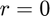
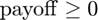

Lookback Options
Generate lookback options for a market with no interest rate ().
Lookback Options are a particular type of options that are characterized by the fact they define their strike price by their past asset history price (asset path). Because they use the maximum or minimum value of the asset path, their payoff satisfies .
Contents
Code
The code is fairly simple because it makes use of the GAIL library. It can be describe as a three-step process:
- Create an option price object, tuning the correct features.
- Generate paths for that object, and compute the price for each path.
- Compute the mean price.
The last two steps are encapsulated in the genOptPrice function.
On a side note, note the payoffParam.optType is set to {'look'}; this specifies the lookback option.
inp.timeDim.timeVector = 1/52:1/52:6/13; % weekly monitoring for 24 weeks inp.assetParam.initPrice = 100; % initial stock price inp.assetParam.interest = 0; % risk-free interest rate inp.assetParam.volatility = 0.4; % volatility inp.priceParam.absTol = 0.1; % absolute tolerance of a dime inp.priceParam.relTol = 0; % zero relative tolerance inp.payoffParam.optType = {'look'}; %lookback lb_call = optPrice(inp); %construct an optPrice object [cprice,out] = genOptPrice(lb_call); % uses meanMC_g to compute the price
Output
disp(['The price of this lookback call option is $' ... num2str(cprice) ... ' +/- $' num2str(max(lb_call.priceParam.absTol, ... lb_call.priceParam.relTol*cprice)) ]) disp([' and it took ' num2str(out.time) ' seconds and ' ... num2str(out.nPaths) ' paths to compute']) %display results nicely lb_put = lb_call; %make a copy lb_put.payoffParam.putCallType = {'put'}; [pprice,out] = genOptPrice(lb_put); % uses meanMC_g to compute the price disp(['The price of this lookback put option is $' ... num2str(pprice) ... ' +/- $' num2str(max(lb_put.priceParam.absTol, ... lb_put.priceParam.relTol*pprice)) ]) disp([' and it took ' num2str(out.time) ' seconds and ' ... num2str(out.nPaths) ' paths to compute']) %display results nicely
The price of this lookback call option is $17.4248 +/- $0.1 and it took 0.86693 seconds and 539040 paths to compute The price of this lookback put option is $19.9241 +/- $0.1 and it took 0.5066 seconds and 372028 paths to compute
Author: Alejandro Madriñán Fernández